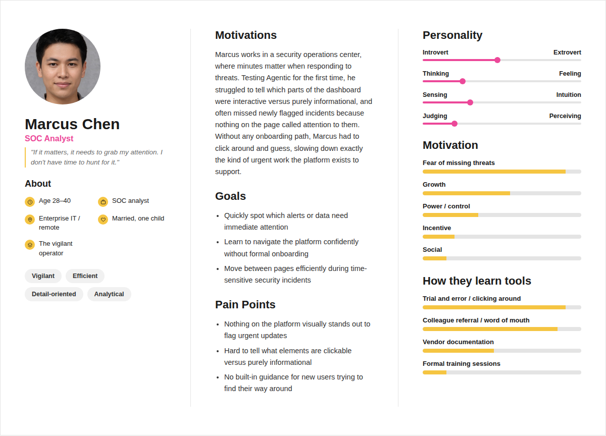
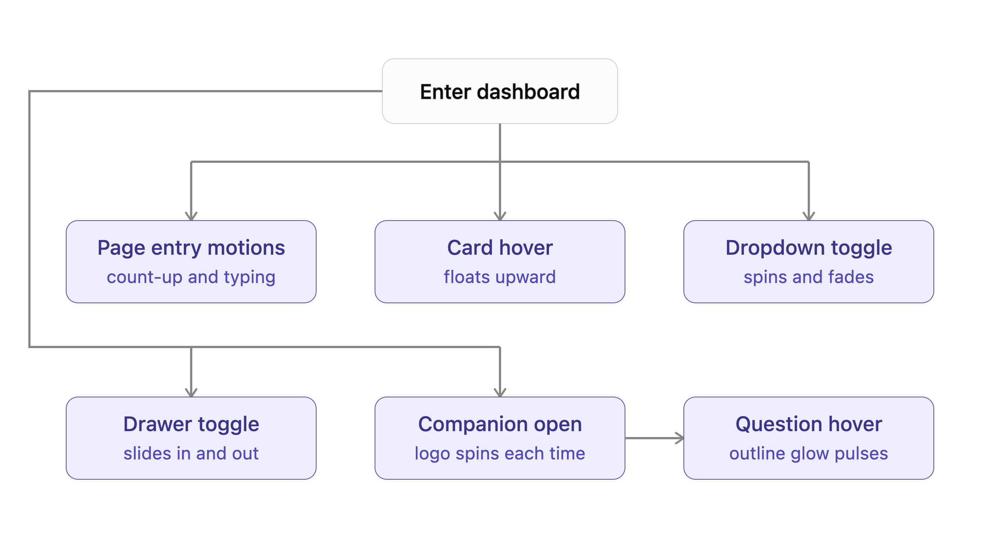
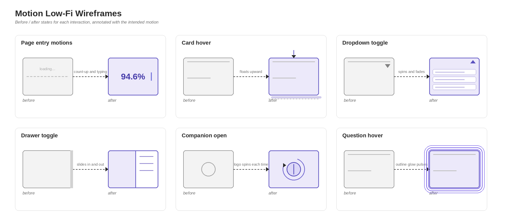
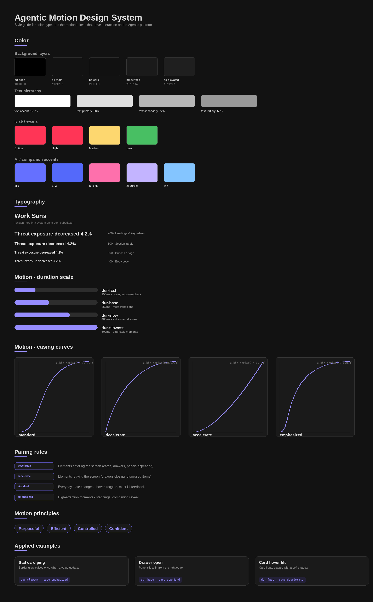

//Cybersecurity platform
Trend AI Agentic Platform
Designing a motion system to bring clarity and interactivity to Trend AI's autonomous cybersecurity platform, Agentic.
Project Overview
As part of my internship at Trend AI, I defined and created a motion design system for their cybersecurity platform, Agentic. Agentic is an artificial intelligence system designed to autonomously perform security information and event management (SIEM) without human intervention.
Problem
Currently, the platform lacks interactivity, making it hard for users to navigate and understand the different statistics it presents.
Solution
The new motion system brings interactivity to the platform, giving users a smoother experience as they navigate it.
Empathize
User Interviews
I interviewed 5 users who had never used the Agentic platform before. I asked them to perform tasks and find specific data without giving them instructions on how to navigate the platform, then observed where they struggled or got stuck trying to locate certain information. These interviews gave me a clearer sense of what aspects of the platform needed to change.
Competitive Analysis
Before designing a motion system for Agentic, I researched three widely used systems: Material 3 (Google), Carbon (IBM), and Atlassian's design system. Material 3 emphasizes expressiveness, using motion to add personality and delight, while Carbon and Atlassian prioritize productivity and clarity. Since Agentic is a cybersecurity platform where fast, confident decision making matters most, I drew more heavily from Carbon and Atlassian, an approach that also aligned closely with Agentic's existing brand identity.
| Design System | Strengths | Challenges |
|---|---|---|
| Material 3 |
|
|
| Carbon |
|
|
| Atlassian |
|
|
Define
User Persona
Marcus is a security operations analyst encountering Agentic for the first time. He needs to quickly spot urgent alerts and navigate confidently without formal training, especially during time-sensitive incidents where every click costs time. His biggest frustration is that nothing visually stands out to flag important updates, and it's hard to tell what's clickable versus informational. He needs stronger visual hierarchy, clearer signals for interactive elements, and built-in guidance to help new users orient themselves quickly.

POV Statement
Marcus, a security operations analyst working under time pressure, needs a clear visual hierarchy that highlights urgent information and signals what's interactive, because without it he has to rely on guesswork to navigate the platform, slowing down the exact kind of time-sensitive work Agentic is meant to support.
How Might We Questions
- How might we use motion and visual emphasis to draw attention to the most urgent alerts and updates?
- How might we make interactive elements feel distinct from static information at a glance?
Ideate
User Flows
The user flow mapped six motion touchpoints across the dashboard: page entry, card hover, dropdown toggle, drawer toggle, companion open, and question hover. Structuring it this way clarified which interactions needed lightweight, frequent feedback (hover, toggles) versus which deserved heavier, less frequent emphasis (companion open, page entry), directly shaping the four-tier duration scale and easing pairing rules I later defined.

Wireframes
My low-fi wireframes mapped each interaction as static before and after states (a card at rest versus hovered, a drawer closed versus open) annotated with the intended motion in words, like "floats upward" or "spins and fades." No real code or animation yet. At this stage I was solving for what should move and in what direction, before spending any time on timing or easing.

Prototype
High-Fidelity Screens
For the high-fi wireframe, I decided to build an HTML prototype where motion was actually implemented on different components to better visualize how each motion would play out. The most important decision was building segmented toggles into the prototype itself, letting me compare variants side by side (float vs. glow on hover, slide vs. flip on the drawer) rather than guessing which felt right, turning this stage into a testing tool rather than just a visual upgrade.
Style Guide
Color and typography were already defined by the UX team, so my focus was purely on motion. I built a four-tier duration scale (150 to 600ms) mapped to interaction weight, and four easing curves, decelerate for entrances, accelerate for exits, standard for everyday feedback, and emphasized for high-attention moments like alerts. This structure keeps every animation purposeful and consistent rather than arbitrary, reinforcing the motion principles: purposeful, efficient, controlled, and confident.

Test
Usability Testing
The goal of this test was to evaluate whether the motion decisions made in the high-fi prototype actually felt appropriate in practice, rather than just looking right in isolated variant comparisons. Participants were asked to complete a set of tasks using the dashboard, including opening the AI companion and typing a question into it, so I could observe their reactions to motion in a realistic, task-focused context rather than while explicitly evaluating animations.
The clearest finding came from the companion chat box. I had initially implemented a continuous gradient spinning motion around it, but almost all participants pointed out that the constant spinning tired their eyes and made it hard to focus while typing. Motion that looks appealing as a standalone demo can actively work against usability once a person needs to concentrate on a task, and constant, looping animation near an input area is especially risky since it competes with focus rather than supporting it.
Based on this feedback, I replaced the continuous gradient spinning motion with a single color highlight instead. This kept enough visual signal to show the companion was active without the constant motion competing for attention, giving participants a calmer, more focused typing experience while still communicating the same underlying state.
Final Product
View prototype →Conclusion
Key Takeaways
- Main insights: Defining my own motion system for a security operations dashboard, the hardest part wasn't setting tokens, it was deciding how much presence each interaction deserved. Since analysts live on this screen all day, I chose restraint over expression, saving movement for rare, high stakes moments like alerts and status changes. That choice showed me motion isn't just decoration, it's how a product earns a user's trust.
- What I've learned from this project: I've enjoyed learning more about how cybersecurity products help their users manage their platforms, keeping data and information safe. Applying these motion principles to a security operations dashboard pushed that further, since in a space where users are scanning for critical alerts all day, motion has to build trust, not compete for attention. Translating token based systems into real interactions, from count up stats to staggered card entrances to status transitions, taught me how much intentionality sits behind even a simple hover state, and how restraint is often the more sophisticated design choice.